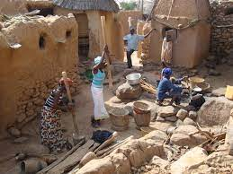
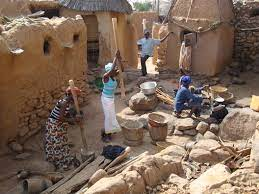

Los dogones son un grupo étnico establecido en el centro de Malí, cerca del rio Níger y en torno a la gran falla de Bandiagara. Sus tradiciones religiosas y su cultura son ancestrales: conservan vistosos bailes con espectaculares máscaras, cultivan una original técnica en escultura y practican una arquitectura muy peculiar: las viviendas dogonas construidas en la misma falla Bandiagara son patrimonio de la humanidad.
Leer MasEl antropólogo francés Marcel Griaule (1898-1956) estudió a los dogones durante los últimos 25 años de su vida. Analizó sus tradiciones y creencias gracias a unas extensas conversaciones con el chamán ciego Ogotemeli. El contenido de éstas fue recogido documentalmente por Germaine Dieterlen (1903-1999), estrecha colaboradora de Griaule, en su libro ‘Le renard pâle’. Y es aquí donde entran Sirio y otros astros.
TRADICIÓN, COSMOGONÍA Y RELIGIÓN DEL PUEBLO DOGÓN
Las tradiciones, la cosmogonía y las leyendas forman parte indisociable de este pueblo, y por suerte, y dado el relativo aislamiento en que han vivido desde hace siglos, se mantiene prácticamente intacto. Actualmente la mayoría de dogones practican el animismo, aunque algunos se han convertido al Islam o al Catolicismo.
Leer MasUno de los ritos más sagrados de los dogones es el de la ceremonia del Sigui, que se hace cada 60 años. Cada poblado tiene su propio Sigui, que dura 10 días. Esta ceremonia se realiza para conmemorar el paso de su cultura y de su lengua, generación tras generación y el último data de 1967.
En el poblado de Songo encontramos la zona donde se hacen los ritos de iniciación cada 7 años. La zona está llena de vistosos grafitis y supone el espacio donde los jóvenes dogon pasarán a la etapa adulta. Según los dogones, todo ser humano nace con una parte femenina y con una parte masculina. La parte femenina de los hombres reside en el prepucio, mientras que la parte masculina de la mujer, está situada en el clítoris. Es por ello, que durante la iniciación, los hombres son circuncidados, perdiendo su alma femenina, y las mujeres reciben la ablación, perdiendo su alma masculina. Aunque la ablación femenina está prohibida y penada, parece que en algunos puntos podría ser que se continuara realizando.
Algunos de los edificios más emblemáticos de los poblados dogón son sus vistosos pajares. Las puertas y ventanas de los pajares, esculpidas en madera, suponen una de las partes más destacables del arte del pueblo dogón.
Otro edificio que se repite en todos los pueblos, es la toguna, una pequeña edificación, muy bajita, sustentada por seis pilares de madera y techo de paja, donde el Consejo de ancianos del pueblo, debate sobre los temas más importantes de la comunidad. Si hay un conflicto entre diferentes individuos o familias, en la toguna se dicta una resolución. En un trekking por los diferentes poblados dogón es fácil encontrar viejos en las togunas.
Leer MasDurante estos días de trekking, el viajero puede dormir en algunos campamentos adecuados a los visitantes. Son austeros, pero con suficiente comodidad, y duchas, aunque sea fuera de la habitación. En verano es habitual dormir en la azotea, pues en el interior hace mucho calor, pero nosotros preferimos dormir dentro, y ahorrarnos los mosquitos. La comida, sin embargo es más austera que el alojamiento. De hecho, es de las veces que más hambre hemos pasado durante un viaje, por lo que recomiendo a quien haga el treking por el país dogón, que vaya con provisiones, por si acaso. Sin duda, conocer el pueblo dogón supone uno de los momentos más bonitos del viaje a Mali.
Cuando empiezan a caer las hojas, la población inicia su recogida para conducirlas hasta un gran almacén comunitario, para posteriormente ser picadas en los molinos. Con la pasta que consiguen, después elaborarán una salsa que acostumbran añadir a los platos de mijo. Los ciudadanos del País Dogón (Mali) tienen la tradición de comer diariamente esta salsa. Los frutos que da el baobab le denominan piña de mono, con los que preparan en su cocina una sopa de mijo. Es un árbol que se aprovecha todo; el tronco, las hojas y las frutas. Cada baobab tiene un propietario, que no obligatoriamente coincide con el regente el huerto donde se encuentra. Éste es el único que tiene derecho a disfrutar de lo que produce el emblemático y adorado árbol de los dogones.
Ver Mas 
